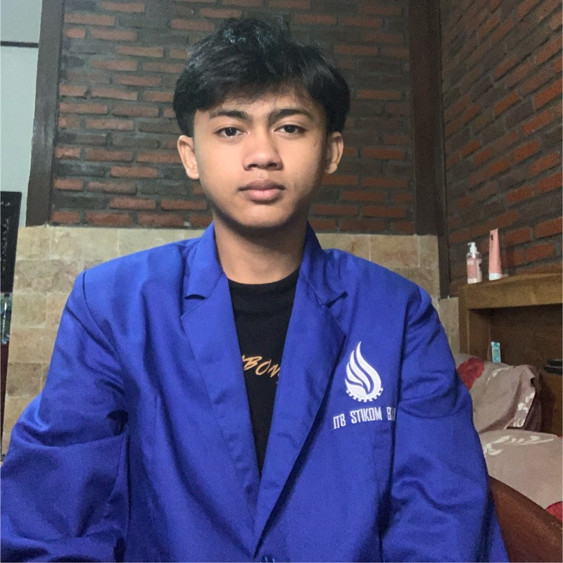

Ketut Bagus Ananta Wiguna

Halo, selamat datang di portofolio saya. Perkenalkan nama saya Ketut Bagus Ananta Wiguna, saya mahasiswa Program Studi Sistem Informasi semester 7 di kampus ITB STIKOM Bali yang saat ini juga aktif bekerja di industri game developer.
Selama kurang lebih dua tahun, saya telah memperoleh pengalaman dalam mengembangkan berbagai prototype game, khususnya game casual 3D serta game 2D untuk anak-anak dan edukasi. Saya menikmati proses mengubah sebuah ide menjadi game yang menarik, mulai dari pengembangan mekanik hingga penyempurnaan fitur dan tampilan UI.
Ketertarikan saya terhadap programming dan desain mendorong saya untuk terus belajar dan mengembangkan kemampuan, sebagai langkah membangun karir di industri game developer.
- Unity 2D & 3D Game Development
- C# Programming & Custom Editor Tools
- Photoshop UI & Game Interface Design